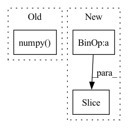

Pattern ID :15507
Before Change
if "query" in dicts[0]:
all_embeddings["query"].append(cls_embeddings.cpu().numpy())
if "passages" in dicts[0]:
all_embeddings["passages"].append(cls_embeddings.cpu().numpy() )
progress_bar.update(self.batch_size)
if all_embeddings["passages"]:After Change
cls_embeddings = self.query_encoder(datasets[i : i + self.batch_size])
all_embeddings["query"].append(cls_embeddings["features"])
if "passages" in dicts[0]:
cls_embeddings = self.passage_encoder(datasets[i : i + self.batch_size ])
all_embeddings["passages"].append(cls_embeddings["features"])
progress_bar.update(self.batch_size)
In pattern: SUPERPATTERN
Frequency: 3
Non-data size: 3
Instances Fragment ID: 52558609
Project Name: paddlepaddle/paddlenlp
Commit Name: 35be940d8e29d002d830da63c5923f63b0ec4d5d
Time: 2023-03-06
Author: w5688414@gmail.com
File Name: pipelines/pipelines/nodes/retriever/dense.py
M Class Name: DensePassageRetriever
N Class Name: DensePassageRetriever
M Method Name: _get_predictions(2)
N Method Name: _get_predictions(2)
M Parent Class: BaseRetriever
N Parent Class: BaseRetriever
M File Name: pipelines/pipelines/nodes/retriever/dense.py
N File Name: pipelines/pipelines/nodes/retriever/dense.py
M Start Line: 273
M End Line: 325
N Start Line: 275
N End Line: 313
Before Change
for i in range(self.num_hadamard):
vec = self.irht(vec, int(seed + (self.num_hadamard - 1) - i))
return (scale * vec)[:int(dim)].cpu().numpy()
// packing the quantization values to bytes
def to_bits(self, int_bool_vec):
After Change
curr_index = 0
vec = []
for k in range(2, max(metadata.keys()) + 1, 2):
scale = metadata[k]
dim = int(metadata[k + 1])
vec.append(self.decompress_slice(bins[curr_index:curr_index + dim ], scale, dim, seed))
curr_index += dim
vec = torch.cat(vec) Fragment ID: 52558608
Project Name: intel/openfl
Commit Name: c10577cb32201c45846d920f871e4bcab76e37ed
Time: 2023-01-13
Author: 30897761+yanivbi@users.noreply.github.com
File Name: openfl/pipelines/eden_pipeline.py
M Class Name: Eden
N Class Name: Eden
M Method Name: decompress(3)
N Method Name: decompress(5)
M Parent Class:
N Parent Class:
M File Name: openfl/pipelines/eden_pipeline.py
N File Name: openfl/pipelines/eden_pipeline.py
M Start Line: 252
M End Line: 260
N Start Line: 337
N End Line: 354
Before Change
image_tokens += [image_token]
if self.is_verbose:
token = int(image_token.detach().numpy() )
print("image token {} is {}".format(i, token))
return torch.cat(image_tokens)After Change
image_token = self.start_token
for i in range(self.sample_token_count):
token_index = self.token_indices[i:i+1 ]
probs, keys_values_state = self.decode_step(
text_tokens = text_tokens,
encoder_state = encoder_state, Fragment ID: 52558611
Project Name: kuprel/min-dalle
Commit Name: 17c96fe110fad3d48ea591dcd46475f521499770
Time: 2022-06-28
Author: brkuprel@gmail.com
File Name: min_dalle/models/dalle_bart_decoder_torch.py
M Class Name: DalleBartDecoderTorch
N Class Name: DalleBartDecoderTorch
M Method Name: forward(3)
N Method Name: forward(3)
M Parent Class: nn.Module
N Parent Class: nn.Module
M File Name: min_dalle/models/dalle_bart_decoder_torch.py
N File Name: min_dalle/models/dalle_bart_decoder_torch.py
M Start Line: 205
M End Line: 222
N Start Line: 206
N End Line: 212